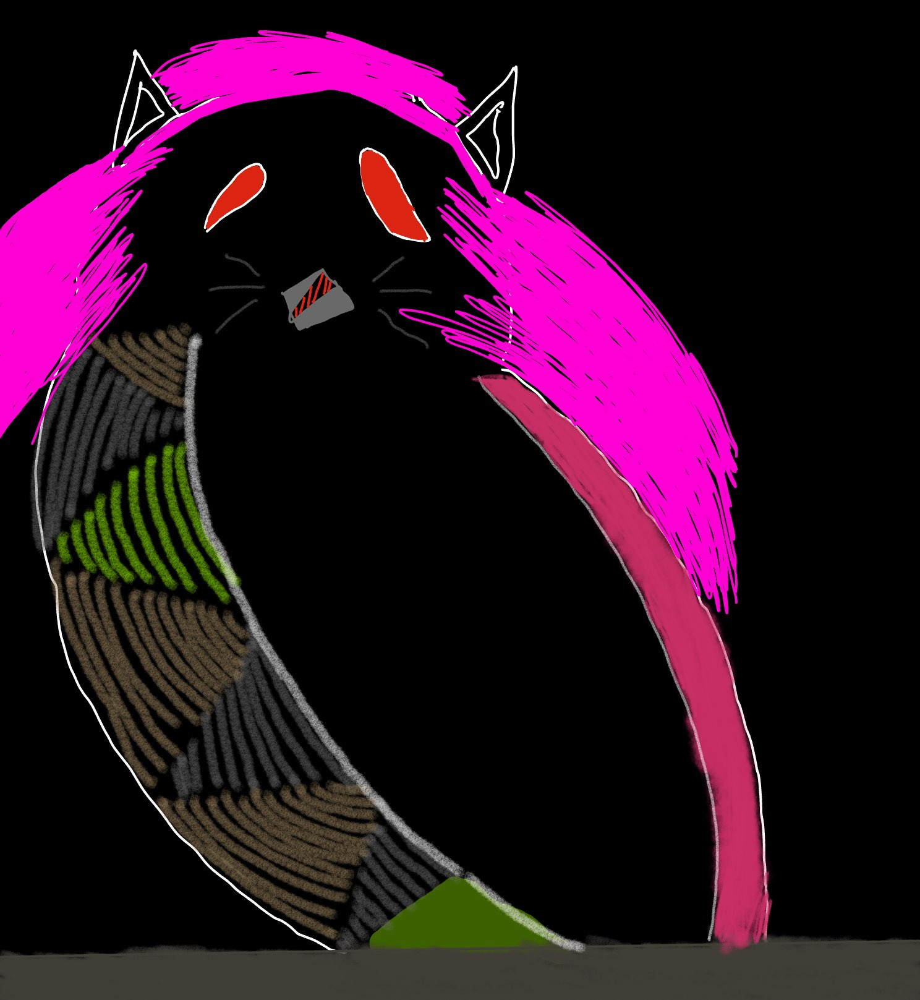

This page is just stuff I like doing in my free time. I value everything artsy, so I
recently started drawing - yeah, my drawings are terrible, but I like that you can turn imagination into
something visual. It’s basically a superpower. You’re creating something from sheer thought, like divine
powers.
I’m also deep into fiction, especially manga and anime — pretty much all genres, from romance to horror.
I play football and basketball with my friends most Fridays too, since we don’t have school that day.
I’m also deep into fiction, especially manga and anime — pretty much all genres, from romance to horror.
I play football and basketball with my friends most Fridays too, since we don’t have school that day.
This is an artwork I made, it’s meant to be a bird with pink hair.
